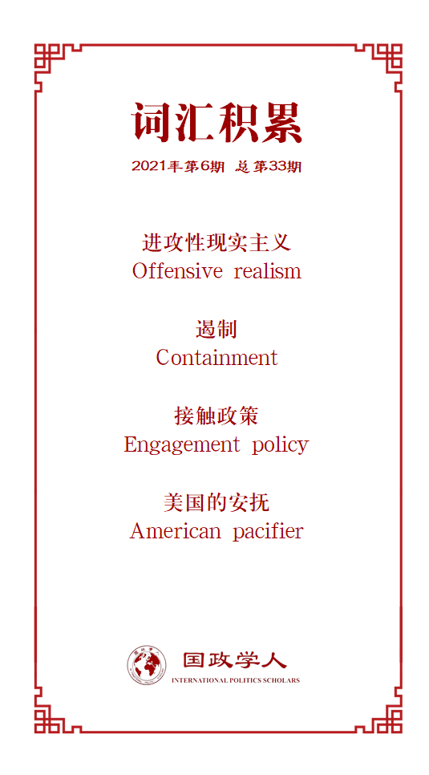

收录于合集

作品简介
【作者】 Stanislav Myšička，赫拉德茨克拉洛韦大学政治学系助理教授。他的研究兴趣包括中国近代史、中国外交政策、亚洲国际关系和政治思想史。
【编译】 徐一君 （国政学人编译员，成均馆大学政治外交学硕士）
【校对】 黎开朗，石稚瑄
【审核】 晋玉
【排版】 余姣
【美编 】游钜家
【来源】 Myšička, S. (2021). Offensive Realism and the Future of China’s Rise. Pacific Focus , 36(1), 63-91.
【归档】 《国际关系前沿》2021年第6期，总第33期。
期刊简介
《太平洋焦点》（ Pacific Focus ）的研究范围涵盖亚太地区安全、国际政治经济、区域主义、环境、移民、公民社会和多元文化等广泛的议题。该期刊既不代表特定的方法，也不代表特定的方法论。相反，它力求培养不同的观点，涵盖区域政治经济主要子领域的所有概念、规范和实证研究。Pacific Focus 旨在在整个国际学术界激发和传播亚太地区的高质量研究和学术成果。该期刊最新影响因子为0.342。
**进攻性现实主义和中国崛起
**
Offensive Realism and the Future of China’s Rise
Stanislav Myšička
内容提要
中国不断上升的军事和经济实力引发如下讨论：中国崛起是否最终导致与美国对抗？这是否促使中国更加融入当代世界秩序？根据约翰·米尔斯海默 (John Mearsheimer) 的进攻性现实主义，大国在竞争激烈的无政府秩序环境中会不断地最大化其权力，以通过牺牲其他强大行为体的方式来实现地区霸权，确保自身生存。照此预测，中国将试图成为亚洲的区域霸权，进而不可避免地导致当今唯一的区域霸权美国采取制衡行动。对于米尔斯海默来说，中国物质能力的重大提升将不可避免地导致它与美国领导的制衡联盟发生冲突，类似于冷战期间超级大国竞争的情况。在本文中，作者驳斥了米尔斯海默的观点，认为进攻性现实主义理论在理论准确性以及其所拣选的典型案例的解释方面都存在不足；且在运用该理论分析中国崛起这一案例时，这种理论性的不足暴露得尤为明显。因而，了解进攻性现实主义的缺陷对于避免产生可能导致未来中美关系进一步恶化的外交政策至关重要。
文章导读
01
引言
中国的崛起对亚洲内外的国际关系产生着深远影响，是当代全球政治中最重要的问题之一。在有关中美较量预测的文献中，最常提及的两种模型便是“合作”和“冲突”。在诸多对中国崛起的解读中，米尔斯海默以及他进攻性现实主义理论所描绘出的中美角逐的未来远景是最为悲观的。作为结构性现实主义的变体，进攻性现实主义预测中国的崛起将必然加剧亚洲地区的大国竞争，同时也极大可能会导致军事冲突。照该理论预测，中国将会仿照美国试图建立区域霸权，并最终导致美国建立起同冷战时对抗苏联那样的反华阵营。
接下来本文将解释进攻性现实主义的基本假设，并关注米尔斯海默对中国在亚洲崛起的分析和预测（主要集中在中美关系上）。在本文的最后两节中，作者尝试表明，米尔斯海默分析的许多部分要么在理论上是不可靠的，要么面临重大实证挑战。
02
进攻性现实主义
按照米尔斯海默的观点，国家对权力的追求没有上限。从理论上讲，成为世界霸主是每个国家的目标，然而这显然是无法实现的。因此，追求区域霸权的强国会试图主导各自的地区，以在安全方面取得相对于其他大国的最佳地位。真正安全的区域霸主将受益于它与其潜在竞争对手之间的远距离，并且只有在特殊情况下才会寻求离岸平衡的策略，（尤其当潜在的竞争对手在其他大陆上行动时）。霸权是稀缺的，但是——正如美国自 19 世纪初以来的外交政策例子清楚表明的那样——区域霸权是可以实现的。
在米尔斯海默看来，防御性现实主义学派低估了征服在世界政治中的力量和果效，高估了大国通过有效外交和制衡联盟压制崛起国的能力。将均势责任推卸到其他国家身上是大国常用的低成本和低风险手段。因而除了崛起国之外，既有大国都会试图转移维护国际秩序的责任。然而，在一个权力转换时期，建立和维持一个稳定的制衡联盟是困难的。成为区域霸权的国家则可以避免这种需要依靠联盟的困境，压制潜在竞争国的同时，主导本国在该区域内的利益。据此观点，历史上的纳粹德国和日本帝国都是贴切的例证。
对米尔斯海默来说，当代国际关系无时无刻不是一个“悲剧，一个永无止境的争霸循环。”且在“修昔底德陷阱”的比喻中，现在的美国和中国都“处于战争冲突的轨道上”。进攻性现实主义则坚定的认为，由于中国物质力量的绝对增长将导致其寻求地区霸权，中美之间的冲突不可避免。因此，分析米尔斯海默对中美关系未来的黯淡描述和预测，对于评估进攻性现实主义理论的总体有效性至关重要。
03
进攻性现实主义和中国崛起：
大国冲突的预测
在许多人看来，中国的崛起代表着当代国际关系的结构性转变。在过去，这种力量对比的转变通常伴随着大国之间激烈的权力竞争。根据米尔斯海默的说法，中国目前对区域霸权的渴望也会导致同样的情况。因为中国和其他任何理性行为体一样，明白区域霸权是在全球政治中生存的最佳方式，所以它会试图模仿美国 19 世纪和 20 世纪的外交政策，包括在其地区内建立至高无上的军事实力。对于现实主义者来说，利益和权力比政权类型更重要：作为相互竞争的大国，即便中美都是民主政治体制，也不可避免会存在利益冲突。
进攻性现实主义预测，中国的崛起很有可能受到当今唯一的区域霸主——美国的遏制。任何区域霸主都将试图控制其他区域潜在竞争者的崛起，因而无论中国国内政治体制是否存在潜在变化、抑或是中国是否会进一步融入当今国际机制，其相对实力的增长将面临美国消极的回应。在米尔斯海默看来，美国对中国多年来奉行的接触政策是被误导的、失败的，因其基于一种不切实际的假设，误以为经济相互依赖和中国在国际政治经济秩序中不断增强的重要作用将带来中国的和平崛起。无论中国未来的内部发展如何，其相对实力的稳步提升都将迫使其向霸权迈进。因此，美国应该不惜一切代价“减缓中国的崛起”。
按照《大国政治的悲剧》的逻辑，东北亚地区是最有可能发生大国相争的区域，而该地区的安全困境却很难解开。现在，美国在亚太地区多国驻军，这种“安抚”对美国及其盟友都切实有效。然而，一旦美军撤离亚洲，必会留下权力真空，这会加剧俄、中、韩、日之间的竞争。另一方面，假如美国对亚太地区维持现有的接触（或提升级别），则必会引起中国方面强硬的回应。中国近年来不断进取的外交姿态也似乎印证米尔斯海默这一观点。此外，近年来中美两国的经贸关系严重受损。不少人预测美国会为了其短期政治目标（遏制中国），不惜牺牲深厚的中美经济相互依赖。
04
对米尔斯海默的进攻性现实
主义 的 理论挑战
本文作者对米尔斯海默进攻性现实主义观点提出三个方面的质疑。
首先，作者认为进攻性现实主义将所有国家一视同仁为具有修正主义特质、追求权力最大化是存在理论漏洞的。在这个理论框架下，所有国家都做最糟糕的打算，及面临着生存危机。然而这种恐惧和进攻性侵略并不存在逻辑联系，即，一个国家自身的生存恐惧，是否必然会导致它视别的所有国家为潜在敌人？米尔斯海默理论中的隐含假定是一国对安全的追求推崇至极致。也就是说，没有国家能成功适应别国或者发出善意的信号。然而，历史上有许多国家，甚至是大国，与其他国家合作且不必担心对方是否隐藏恶意，这便与进攻性现实主义默认的所有国家对他国都做最坏假设的前提相冲。
其次，作者批判了进攻性外交政策会给一国带来长远收益的观点。按照该理论，实施侵略进攻的国家一旦取得胜利，则会赢得更高的生存几率，即，侵略性政策能带来更多的安全。然而，作者指出，并不是只有通过权力最大化才能实现较高水平的安全保障。从历史来看，争霸似乎是一件非常危险的事情。成为区域霸主当然有利于一国的权力地位，但若争霸途中被摧毁则不然。因此，关于国际关系中行为者理性的假设（成为侵略性和修正主义的国家是理性的）与米尔斯海默的另一个核心命题——生存是国家存在的首要目标——发生冲突。
最后，争霸获利的论点也不符合核武器扩散后的世界。米尔斯海默声称，核武器减轻了大国冲突的可能性，但仍不能消除对从另一个国家的常规发展中崛起的国家的恐惧，即核武器对两个拥核国家间的常规冲突没有重要的影响。 然而，他举的所有例子都是短暂而微不足道的战争，而不是重大的大国冲突。
05
进攻性现实主义和中国崛起
作者在此处从多个角度驳斥了进攻性现实主义的观点。
首先，针对进攻性现实主义以美国崛起历史中成功奉行门罗主义为例，主张国家都有成为区域霸权的野心的观点，作者提出不一样的看法。作者指出中美两国存在截然不同的地理环境。美国所处的地域，缺乏实力强劲的竞争国家。相比于美国，中国周围有诸多邻国，如大国俄，印，美国盟友日、菲、泰、乃至越南，且其中多个国家在中美之间采取对冲策略。若生存是一个国家的核心利益，则很难想象为取得区域霸权地位而采取进攻性行为如何能保证而非损害中国的生存。
贾庆国等学者曾以19世纪英美间和平权力转移为例，以说明大国之间并非不可避免修昔底德陷阱。尽管政治体制上看，中美并非英美，然而中国无意彻底挑战现有的美国主导的世界秩序，而只是作为一个活跃的行为体参与着多边组织以及有关重要国际机制。此外作者也指出大国得以和平实现权力交接的另一个理由，即自二战终战以后，大国竞争的性质便有了根本改变。过去，大国争夺土地资源和人口，因此不可避免发生扩张侵略。然而现在，富有的国家拥用高附加值产业链富有的国家坐拥高价值产业链，并极度依赖全球化。尽管仍存在少数以占领别国土地为目的的战争，但这多为宗教、历史原因。中国自古就并非侵略性国家。考察1949年之后中国对领土问题的处理（如与俄罗斯、缅甸、哈萨克斯坦等国），可以看出中国即便是在实力和外交方面享有优势的情况下依旧具有妥协精神，尽可能采取政治行动而非军事行动。
作者不认为中国同二战时期的德国具有相似性。彼时德国面对一个奉行均势至上的欧洲大陆体系，身边强国林立且都虎视眈眈。而此时中国处于一超多强的国际环境，且中国自身便是一强。相比于过去的世界，当今体系的权力分配更加明晰。中美之间的相互经济依赖意味着冲突将带给美国高昂的损失，甚至严重削弱美国的军事能力。
作者认为美国政府依照米尔斯海默的观点采取对华激进的遏制政策，将可能迫使中国采取激进的、更不可预测的行动。自特朗普发动贸易战之后，中美经济关系发展无疑出现了诸多裂痕，然而这种经贸关系的紧张是否会上升至安全领域的冲突令人怀疑。正如法里德·扎卡里亚（Fareed Zakaria）指出的那样，现在美国政界、经贸界、学界在视中国崛起为威胁上达成的共识是危险的。即便是近年来在新领导人主导下中国有所进取性外交举动，但这是否在何等程度上真的改变了美国的国家利益是值得询问细究的。既然冷战时期遏制政策已被证明付出了高昂政治经济成本，那美国则需要思考，若同中国展开遏制政策将可能付出多少代价。
译者评述
现实主义流派中，米尔斯海默同他主张的进攻性现实主义都属强理论范畴，也是代表了西方鹰派的最尖锐的观点。随着中美关系恶化，诸多西方尤其美国的保守类学者均消极预测中美关系进一步走向，并视中国为修正主义国家。也有不少学者将当代崛起的中国与德国比较，认为中国在人口、资源、经济发展、军费支出、科技进步等方面的突出，以及其国内日益激昂的爱国主义或是民族主义情绪，都同过去不满于本国国际地位、挑起世界大战的德国极为类似，从而得出中国在未来也必会威胁世界秩序的结论。实际上，得出此类研究结论的学者们多是受米尔斯海默的深刻影响，他们仅仅是把其观察到的部分特点，生硬地与进攻现实主义的固有观念和模式“相匹配”，从而得出结论。由于进攻性现实主义的基本主张本身就不是一个公理、共识，如本文作者所指出的，其理论自身同样存在许多漏洞，因此照葫芦画瓢，最终得出来的结论就更加偏颇和不可信了。
西方学术更重逻辑因而更加慎密又严谨，东方学术重描述因而更有大局和包容。未来过中国的西方传统精英们似乎很容易陷入逻辑的死胡同。笔者看来，在有关对华新疆政策的诸多西方指责甚至污化的报道文章中，同样也是因为他们先入为主的带有某种负面的固有观念和预设，并只顾证明自己的猜想，捕风捉影的寻找任何可能的证据。而扭转这种错误推导的唯一办法，就是继续保持国门开放，欢迎更多的外籍人士了解认识中国，从而打破他们误设的对华认知前提。
中美作为当今两个最重要的国家，在全世界遭受疫情痛苦，灾难袭击，经济衰退等负面事件的时候，应该更多以合作的姿态解决问题，而非制造矛盾和更多困难。包括本文在内的最近的一些西方学者[1]也开始发文呼吁美国停止或者降低对中国的对抗强度，认为这无益于两国及世界的利益。而较为在理智的德国以及目前的匈牙利政府中也不乏对华持善意或公正姿态的人士。因此，笔者认为，当下的世界变局之中，各国过分采纳偏进攻性现实主义的外交政策只会煽动民族情绪，从而可能导致国家间螺旋式的敌意上升。根据学者以中美南海问题为例所做的研究来看，两国的受访者都容易受到冲突螺旋模型的影响，将他国采取的行动习惯性视为出于进攻性动机，而对本国采取的行动习惯性视为出于防御性动机。[2] 因此，笔者亦认同本文作者的主张，尤其在当下中美关系的思考中，应该换一种理论思路去化解已存矛盾。
参考文献
[1] 例如Bernie Sanders在最新一期《外交事务》上发表的提醒美国不要发动新冷战的文章：Washington’s Dangerous New Consensus on China– Don’t Start Another Cold War。
[2] Kertzer, Joshua D., Ryan Brutger, and Kai Quek. Perspective Taking and the Security Dilemma: Cross-National Experimental Evidence from China and the United States. Working paper, 2019.
词汇整理

文章观点不代表本平台观点，本平台评译分享的文章均出于专业学习之用, 不以任何盈利为目的，内容主要呈现对原文的介绍，原文内容请通过各高校购买的数据库自行下载。
好好学习，天天“在看”
国政学人
支持学术公益与知识传播
微信扫一扫赞赏作者 __赞赏
已喜欢，对作者说句悄悄话
取消 __
发送给作者
发送
最多40字，当前共字
上一页 1/3 下一页
长按二维码向我转账
支持学术公益与知识传播
受苹果公司新规定影响，微信 iOS 版的赞赏功能被关闭，可通过二维码转账支持公众号。